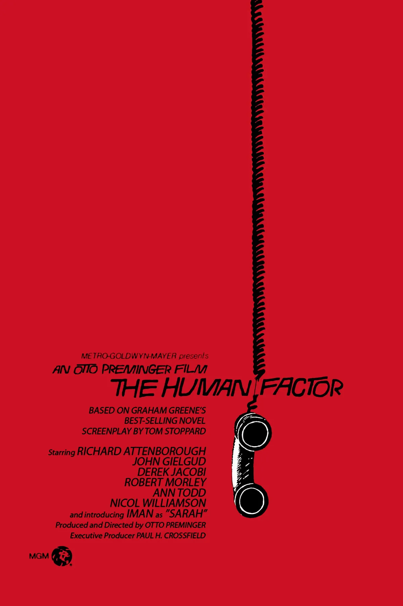

Introduction
Saul Bass is one of the most influential figures in the world of graphic design and motion graphics. Known for his simple yet powerful visuals, he changed the way design was perceived in film and branding. Before his work, title sequences were often overlooked as mere fillers, but Bass saw them as a chance to engage the audience from the very first frame. As he put it:
“I have felt for some time that the audience involvement with the film should really begin with the very first frame. You have to remember that until then titles tended to be dull credits mostly ignored or used for popcorn time. So there seemed to be a real opportunity for titles to be used in a new way, to actually create a climate for the story that was about to unfold.”
This essay explores Saul Bass's journey, his creative philosophy, and his lasting impact on design, with a focus on his work in film and branding.
Early Career
Bass's career started humbly as a lettering and paste-up artist at Warner Brothers in New York. He soon moved on to 20th Century Fox as a layout artist, but he grew frustrated with the industry. He felt constrained by executives making all the creative decisions, calling the result “potpourri” - cluttered designs lacking originality. An example of this frustration was House of Dracula, which he saw as emblematic of uninspired design trends.
Eventually, Bass made a bold move. He took a 50% pay cut to join Blaine Thompson, an advertising agency, under one condition - he would not work on any film advertising. It was here that he met Yorkie Kepchi, who introduced him to the concept of “visual tension,” a principle that would shape his future work.
Film Title Sequences
Bass's breakthrough in film came in 1954 when he collaborated with Otto Preminger on the title sequence for Carmen Jones. This was followed by The Man with the Golden Arm in 1955, where his jagged, abstract visuals captured the essence of the film's story about addiction. Bass described his goal as:
“Reach for a simple visual phrase… evoke the essence of the story.”
His work on Alfred Hitchcock's films Vertigo, North by Northwest, and Psycho cemented his reputation. The spiralling graphics of Vertigo visually represented the themes of obsession and disorientation, while Psycho's slashing title sequence heightened the film's tension. Bass's sequences became an art form in themselves, giving audiences a taste of the story before the first scene unfolded.
Poster Design
Bass's posters were equally groundbreaking. His ability to convey a film's narrative essence with bold, abstract shapes and minimal colour made his designs timeless. For example:
- The Magnificent Seven featured simple, dynamic imagery that reflected the film's action-packed storyline.
- Spartacus used a fragmented, symbolic design to convey the story's themes of rebellion and unity.
- The Cardinal demonstrated his knack for using bold imagery to evoke emotion and curiosity.
Looking at one of his posters is, as designer Milton Glaser said, “like looking at jazz made visual.”
Brand Identity
While Bass is best known for his work in film, his contributions to corporate branding are equally significant. He created logos for companies like AT&T, United Airlines, and Warner Communications. These designs were characterised by their simplicity and timelessness, encapsulating the essence of the brands they represented. For example:
- The AT&T globe symbolised global connectivity and modernity.
- The United Airlines tulip logo reflected elegance and innovation.
Bass's logos are still studied today for their effectiveness and enduring appeal.

Design Philosophy
Saul Bass believed that style was substance. His work wasn't about decoration but communication. He once said:
“Design is thinking made visual.”
This philosophy is evident in his minimalist approach, where every element served a purpose. His designs aimed to evoke emotion, provoke thought, and engage the viewer. This is why his posters, logos, and title sequences remain so impactful.
Bass also valued creativity driven by curiosity and freedom. As he put it:
“Interesting things happen when the creative impulse is cultivated with curiosity, freedom, and intensity.”
Legacy
Saul Bass's impact on design and film cannot be overstated. His title sequences paved the way for modern motion graphics, influencing filmmakers and designers alike. Directors such as Martin Scorsese, who worked with Bass on Goodfellas and Casino, have credited him with shaping the art of storytelling through design.
His work remains a benchmark in graphic design, inspiring new generations of designers. As Milton Glaser observed:
“I believe that there are very few artists in our time who have created as memorable a series of designs and objects. Saul truly shaped the vision of our time.”
Conclusion
Saul Bass revolutionised graphic design and the art of title sequences by combining simplicity with storytelling. His innovative approach transformed title sequences into narratives, while his branding work showed the power of minimalist design. From Vertigo to AT&T, his work continues to inspire, proving that great design is timeless.
And like all great artists he loved the colour red.